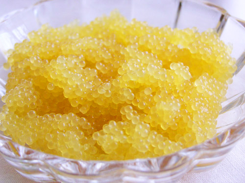

Частиковая икра
IV. Частиковая икра
Она же "желтая" икра, иногда неправильно называемая "белая".
Это икра практически всех рыб, обитающих в российских реках.
Изготавливают частиковую икру почти исключительно ястычного типа, т. е. в
ястыках. Ее солят сухой солью (12— 12,5 процентов соли к весу икры) в
течение 8—12 суток в сухих деревянных ларях, затем промывают и
укладывают рядами в бочки. Или же солят в сильном растворе соли
(тузлуке) 3—4 часа, а затем провяливают 2 недели (кефаль, лобан).
Для сравнения: благородная икра (красная и черная) солится всего от 10—15 (красная) до 35—45 минут (черная зернистая).
Только щучью икру делают пробойной, то есть икринки освобождают от пленок ястыков и просаливают.
Частиковая икра менее ценная, чем икра осетровых и лососевых
рыб, но по своим пищевым качествам она не уступает мясу рыбы. Кулинар не
должен пренебрегать этим полезным и питательным рыбным продуктом, тем
более, что при умелом приготовлении блюда из икры частиковой рыбы
обладают хорошим вкусом.
Свежую икру частиковой рыбы, в частности щучью, кулинары
просаливают, добавляя в нее 2—3% соли от веса икры и подают в качестве
холодной закуски с мелко нарезанным зеленым, луком.
Лучшая из частиковой — икра леща, воблы и судака.
Промышленность приготовляет эту икру, протирая через сита (грохотки), а
затем засаливая. Икра частиковых, приготовленная этим способом,
называется пробойной.
В ястыках приготовляют судаковую икру, которая называется галаган.
Тарамой называется ястычная икра леща и воблы.
Вяленой приготовляют икру лобана — крупной кефалевой
рыбы. После посола в ястыках эту икру провяливают и для большей
сохранности ястыки покрывают слоем парафина.
Вяленая лобанья икра, обладающая особым острым вкусом, — один из лучших гастрономических продуктов.
Икру любой частиковой свежевыловленной рыбы каждый может приготовить самостоятельно, превратив в блюдо-деликатес.
Для этого надо разорвать ястык, выложить икру в глубокую
посуду, освободить от пленок, раздавленных икринок, жира и т. п.,
осторожно протереть икру на волосяном сите, ячейки которого должны быть
чуть крупнее икринок. Очищенную икру перемешать с измельченным луком
(чем тоньше, тем лучше), солью, перцем до получения однородной смеси (на
200 г икры — 1 луковица, 1 чайная ложка соли). Затем постепенно вливать
чайной ложечкой в икру сливки (25 мл), осторожно втирая их в икру, но
не повреждая целостности икринок, которые чуть увеличатся в объеме.
Посолить крупной солью, дать постоять час, убрать не впитавшиеся
кристаллы соли (поэтому удобна именно крупная соль!).
Так приготавливать икру можно у всех рыб, лишь бы икра была свежая и
чистая (не замаранная внутренностями и с неразрушенным, прочным
ястыком).
Особняком в этой группе находится янтарная зернистая щучью икра,
которую на Руси почитали наиболее вкусной из всех видов икры.
Щучья икра – это не только издавна известный на Руси
деликатес, но и необыкновенно полезный продукт питания. Щучья икра
богата легкоусваиваемыми белками, лецитином, минеральными веществами и
незаменимыми полиненасыщенными жирными кислотами.

Янтарная зернистая щучью икра.
Лечебные и особенно диетические качества щучьей икры ценятся
высоко. Так, если в икре осетровых содержится 16% жира и 28% белков, в
икре лососевых, соответственно, около 12% жира и 35% белков, то в икре
частиковых рыб и щуки жира содержится не более 1,5%. Щучья икра также
богата белками, минеральными солями и витаминами, в том числе,
витаминами А и Д.
Щучья икра в старину считалась царским деликатесом. Говорят,
что при Иване Грозном щучья икра ценилась значительно выше, чем икра
черная. Правильно засоленная, она приобретает янтарный цвет и
рассыпчатость. Икра щуки ничуть не уступает по вкусу красной и черной.
Всегда считались классикой русские блины со щучьей икрой.
Чтобы приготовить щучью икру, необходимо очистить икру от
оболочки, положить в чугунок или глубокую посудину с овальным дном и
хорошо размешать деревянной ложкой до тех пор, пока она не станет
беловатого цвета. Постепенно прибавлять оливкового масла и лимонного
сока, взбивая веничком. Если икра слишком сгустится, прибавить ложку
уксуса, разбавленного водой. Дать час постоять, чтобы набрала вкус.
Если повезет и вам попадется живая щука, то приготовьте по
рецепту без отступлений: на икру из килограммовой щуки — примерно 2—3
ложки масла, 1 лимон или ложка уксуса. Если щука мороженая, то слегка
размороженную икру, также очистив от пленки, обдать кипятком; подержать
10 минут, а потом продолжать по рецепту.
В том случае, если приготовление икры щучьей придется летом,— добавьте мелко резаного укропа.
Рецепт:
Икра щучья пробойная
Пробойная икра - освобожденная от пленок через специальное сито - пробой (грохотку).
Этот рецепт пригоден для приготовления пробойной икры разных видов.
Если икра щучья – перед приготовлением ее обязательно надо обдать крутым кипятком.
1. На эмалированную кастрюлю кладём мелкоячеистую сеточку из хлопчатобумажных или льняных нитей
(размер ячейки – 4-5 мм), укрепленную на деревянной рамке.
2. На сетку помещают ястыки. Надавливая руками на икряные мешочки, проталкиваем икринки в кастрюлю.
3. Засыпаем соль.
4. Аккуратно перемешиваем деревянной рогулькой или лопаткой до загустения.
5. На дно посуды (неметаллической!) укладывается холстина, затем
выкладывается икра. Сверху прикрывается холстиной – но не крышкой.
6. Ставим в холодильник на 3-5 суток, при температуре от 0 до +5 гр. С.
Для малосольной икры соли берется 7-8% по весу, для среднесоленой – 10-12%.
Употреблять икру рекомендуется с мелкорубленым зеленым луком,
лимоном, зеленью. Очень вкусно с сепараторной сметаной или загустевшими
сливками.
Словарь икорщика
Ястык — пленка яичника, где находится икра рыб.
Грохотка (пробой) — решето, через которое протирают вынутую из ястыка икру, чтобы убрать пленки, соединительные ткани и некачественные зерна.
Зернистая — икра, извлеченная из ястыка, протертая на грохотке, а потом уже засоленная.
Паюсная — икра, засоленная в ястыке, потом вынутая из него и протертая на грохотке.
Ястычная — икра, засоленная в ястыке. Низшая категория.
Пастеризованная — вся икра, которая продается в маленьких стеклянных банках.
Галаган — ястычная икра судака.
Тарама — ястычная икра леща и воблы.